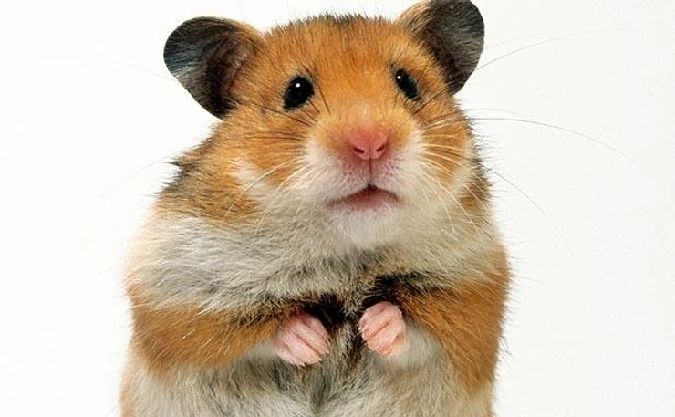

De besmettinge van het schimmelhoutvirus gaan weer omhoog. Dat komt door de versoepelingen deze zomer en de delta variant van het schimmelhoutvirus. Het schimmelhoutvirus veranderd heel vaak. Meestal zijn dat hele kleine veranderingen die niks bijzonders doen. Soms wordt die besmettelijker. Dat is bij de Britse en Delta variant gebeurd. Knaagdieren denken dat knaagdieren qr codes van negatieve testen en vaccinaties hebben doorgestuurd op hun Houtphone/Beaverphone. Dat is nog niet bewezen. Zelf denk ik dat ze beter kunnen stoppen met de app en papieren bewijzen moeten vragen om een id bij de controle.
Hamster Keghart is uit Syrie gevlucht en is met een 9,1 geslaagd voor het Gymnasium.
Op de app TikHout zie je uitdagingen die je na kan doen. Dat lijkt leuk maar er zitten soms wel gezondheidsrisico's aan. Verder heb je niet iemand die meekijkt en zegt wat je wel en niet moet doen en wat de risico's zijn. Knaagdieren doen dit vooral omdat de app mogelijkheden heeft om te reageren of om een filmpje te maken waarin je je dansje kan laten zien in vergelijking met het orginieel. Dat is een soort van sociale drang van ik wil erbij horen. Dat is toch de manier van denken die ons wordt aangeleerd. Zo heb ik regelmatig gesprekken met mensen die dan vervolgens zeggen het meest bekende is meestal wel het beste. Dat is niet zo. De een vindt dit goed en de ander vindt iets anders goed. Zo gebruik ik geen Samsung. Die hebben naar mijn mening zoveel overbodige software op hun telefoon gezet dat het langzaam wordt en minder overzichtelijk. Nokia is minder goed kwa hardware maar ze hebben de software volledig geoptimaliseerd zodat die vaak sneller is dan een Samsung. Dat heb je ook met Windows en Linux. Mensen gaan zich sterk afvragen waarom je geen Windows gebruikt. Dat is niet alleen met telefoons en computers het geval. Ook met mode, games en speelgoed zoals Pokemon. Zelf probeer ik zoveel mogelijk van trends weg te blijven en doe ik mijn eigen ding. Zo koop ik niet de nieuwste modetrend maar een beverpak. Daardoor houd je mensen die alleen met je omgaan/naar je kijken omdat je doet wat populair is weg en houd je meer respectvolle mensen/kijkers over. Ik stream bijvoorbeeld Football Manager. Dat spelen heel weinig mensen. Dus daardoor houd je de mensen die alleen naar je kijken door Fortnite weg. Royalistic is overgestapt van GTA naar Fortnite omdat meer mensen Fortnite gingen spelen. Daardoor gingen er kijkers weg die geen Fortnite spelen. Als hij naar Football Manager zou switchen dan zou hij waarschijnlijk bijna niemand meer overhouden. De mensen die hij dan overhoud zijn voor een groot gedeelte trouwe kijkers die naar hem kijken om zijn persoonlijkheid of omdat hij leuk entertainent. Die mensen moet je houden. Ik weet het, het is moeilijk want mensen gaan het toch apart vinden dat je niet doet wat de meesten doen maar goede personen gaan de respecteren en de slechte worden vervelend en gaan bij je weg. Dat is precies wat je wil toch. In Sommige gevallen is het niet verstandig om aan te trekken wat jij leuk vind. Als je in de supermarkt met een Darth Vader masker rond loopt dan kunnen mensen aggresief reageren. Verder mag je helaas ook niet met een masker in de bus. Op sommige plekken in Nederland is het echt niet verstandig om iets anders aan te doen dan de gemiddelde persoon zoals een beverpak. Dan kunnen mensen erg aggresief reageren. Let dus vooral op of de omgeving waar jij rond wil lopen alleen met woorden wordt reageerd of ook geweld gebruikt wordt. Als daar vechtpartijen zijn dan zou ik niet in iets bijzonders rondlopen. Verder is het ook niet verstandig om een sollicitatiegesprek in een bijzondere outfit te doen. Zelf vind ik dat bedrijfseigenaren naar de persoonlijkheid moeten kijken. Daar kunnen ze achter komen door kritsche vragen te stellen. Helaas kijken bedrijfseigenaren tot op vandaag de dag naar het uiterlijk. Ik hoop dat dat snel verleden tijd is maar helaas het gebeurd. Ik ben er ook wel is in gesprek over gegaan met een bedrijfseigenaar maar hij wilde mij geen gelijk geven. Dus het is niet verstandig om in een apart pak op sollicitatiegesprek te komen. Ik zeg niet dat je helemaal moet stoppen met trends volgen. Zo is Microsoft Office nog steeds het beste programma voor veel mensen. Ik zeg alleen dat je als je de keuze hebt moet gebruiken wat jij fijn vind of goed vind en dat als je gaat streamen beter een minder bekende game die je leuk vind kan streamen dan een game die trending is.